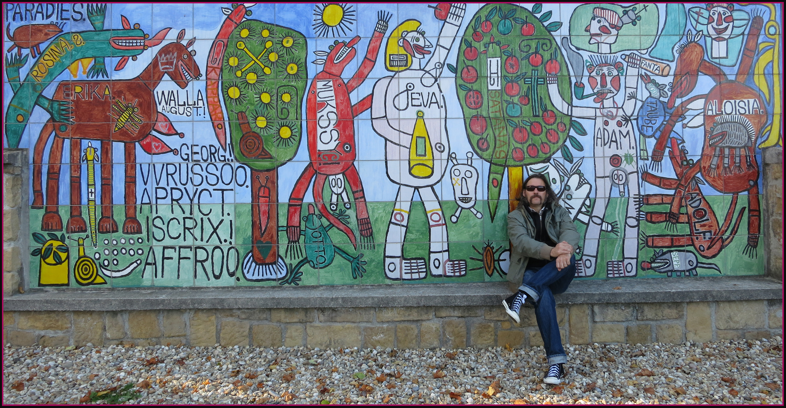
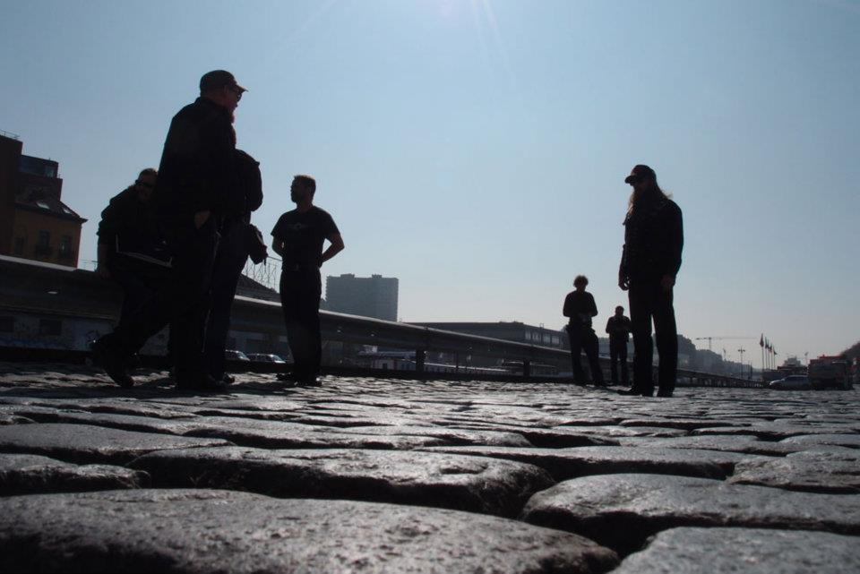
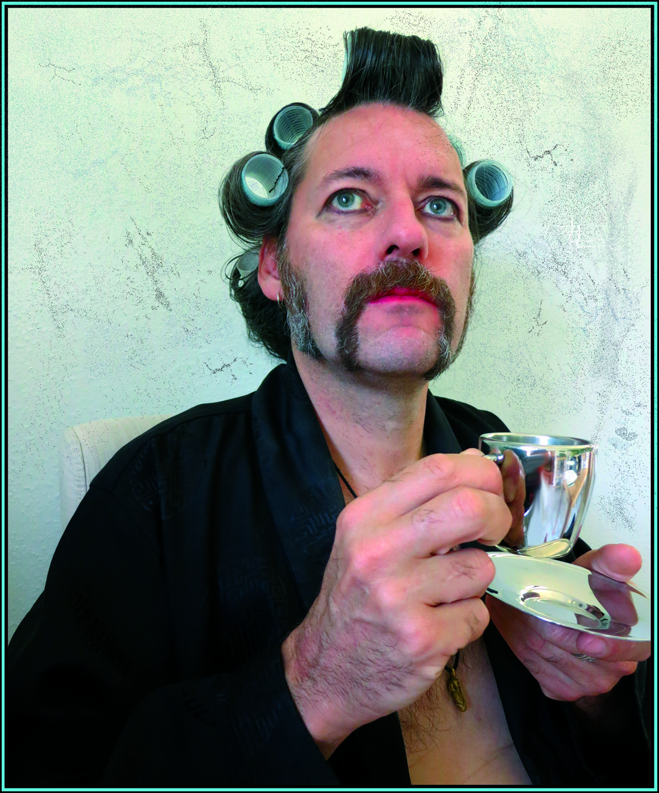
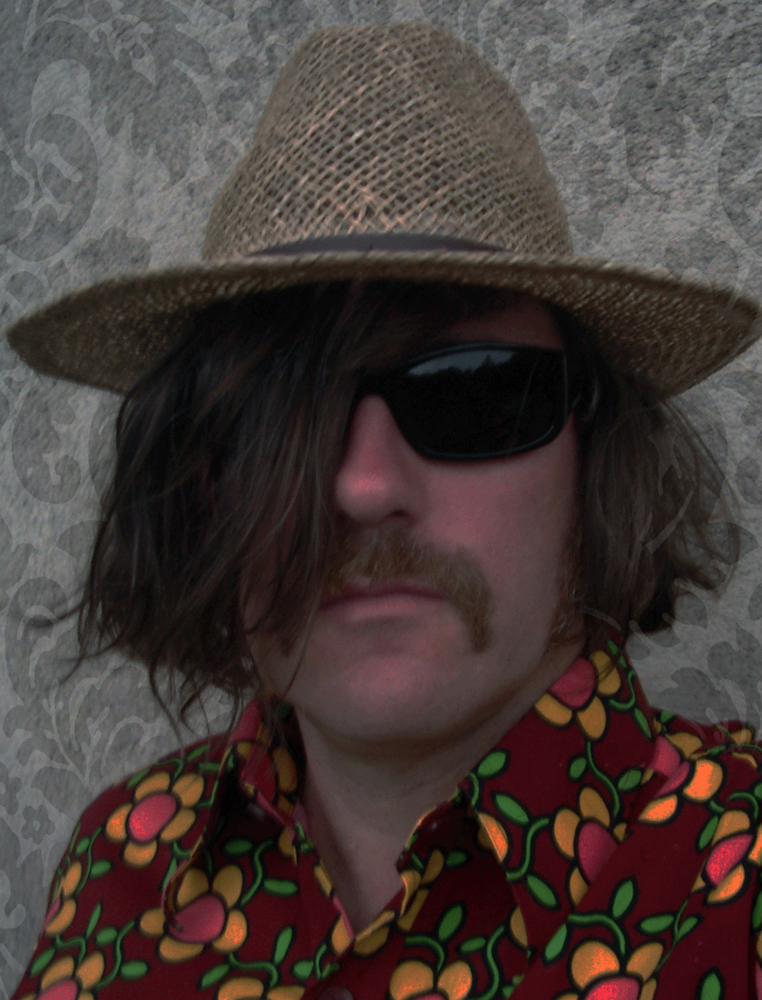

Visual reference — not displayed
Der Blutharsch — wordmark (period 1996–2010)
Type lockup used on early Der Blutharsch material. Local file: images/albin/DerBlutharschSchriftzug.gif (392×108).
Rights to be cleared
Selected images from the working corpus, with rights status declared per item.
Thirteen images are displayed below as part of an editorial selection. Only the SneQ performance photograph has a fully documented licence (CC BY-SA 4.0, Wikimedia Commons). The other twelve are kept here for documentary purposes; their chain of rights is not yet cleared and is flagged on every caption. If you are a rights-holder and want an image removed or correctly credited, see the methodology page.











Performance photograph (first card): SneQ, 10 June 2021, own work, on Wikimedia Commons as File:Albin-rejoice-e1653633850190.jpg (CC BY-SA 4.0). Local copy: images/albin/albin-julius-performance-2021-sneq-cc-by-sa-4-0.jpg.
Visual references
Files kept in the local corpus but not embedded in the HTML: project wordmarks (logo / type identity, more delicate to publish without a label clearance), small decorative crops, and clearly private photographs. Listed for the record only.
Visual reference — not displayed
Type lockup used on early Der Blutharsch material. Local file: images/albin/DerBlutharschSchriftzug.gif (392×108).
Rights to be cleared
Visual reference — not displayed
Extended wordmark used from 2010 onward. Local file: images/albin/DBatucotlhSchritzug.gif (399×104).
Rights to be cleared
Visual reference — not displayed
Ornament / icon associated with the Devil's Horns motif. Local file: images/albin/Devil_s-Horns.gif (378×454).
Rights to be cleared
Visual reference — not displayed
Five files appear to be private (informal portraits, snapshots): Beachlife1.jpg, IMG_3907.jpg, albin_boat.jpg, albin_friend.jpeg, on_the_road.jpg. Not embedded; not listed individually.
Rights to be cleared
Editorial note — the visible gallery above includes images whose rights chain is not yet documented (every card is flagged accordingly). They will be relabelled or replaced as documentation improves; see Methodology & sources and SOURCES_ARCHIV.md §13.